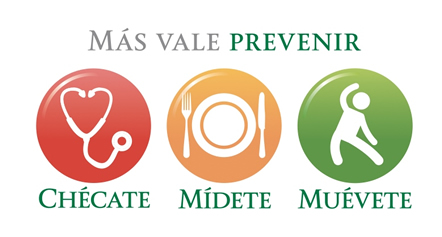
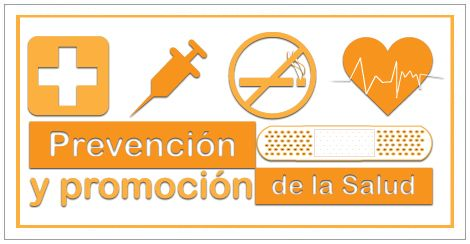

La promoción de la salud y la prevención de la enfermedad son todas aquellas acciones, procedimientos e intervenciones integrales, orientadas a que la población, como individuos y como familias, mejoren sus condiciones para vivir y disfrutar de una vida saludable y para mantenerse sanos, de acuerdo con sus requerimientos en cada una de las etapas de su ciclo vital: niño, adolescente, mujer, hombre y adulto. El propósito de los programas de Promoción y Prevención es ofrecer servicios integrales que potencialicen la salud de los afiliados y sus familias, y promuevan en ellos una vida sana, feliz, placentera y productiva, partiendo del autocuidado; por su naturaleza, estos programas son una responsabilidad compartida entre las personas, las familias, las IPS y la EPS. La dependencia de promoción y prevención del Fondo de Seguridad Social en Salud de la Universidad de Nariño también tiene a cargo el sistema de vigilancia en salud pública de la IPS y la consolidación de las bases de alto costo según requerimientos del Ministerio de Salud y la Protección Social. A continuación se describe el procedimiento a realzar para cada una de las actividades del servicio de promoción y prevención del Fondo de Seguridad Social en Salud.
Consultas de Promoción y Prevención por Enfermería
Incluye convocatoria y demanda inducida, llamada al usuario, realización de la consulta, registro clínico y seguimiento
Consultas de Promoción y Prevención por Medicina General
Incluye la demanda inducida, ubicar pacientes en consulta externa, llamada al usuario, realización de la consulta
Seguimiento Pacientes Programas Especiales
Se realiza seguimiento a pacientes con enfermedades de interés en salud pública y enfermedades del endotelio, seguimiento al programa de maternidad segura y sistema de vigilancia nutricional. Los usuarios en programa de acondicionamiento físico, se manejan de acuerdo con las patologías que padezcan y el ciclo vital individual en que se encuentren.
Tamizajes Especiales
Se realiza previamente, convocatoria escrita, llamado de pacientes, solicitud de permisos escritos y difusión de información; incluye la atención de tamizajes y muestras para clasificación del riesgo cardiovascular, glucometrías, cálculo del índice de masa muscular, tamizaje de tensión arterial, peso y talla. Se realiza posteriormente evaluación de resultados con elaboración de órdenes para confirmación de diagnósticos y se ubica cita médica para el usuario.
Procedimientos de Promoción y Prevención
Incluye inserción de implante subdermicos anticonceptivos, realización de consejería personalizada, cursos, talleres, etc.; previamente se elabora material educativo, celebración de pulsos (fechas en salud especiales)
